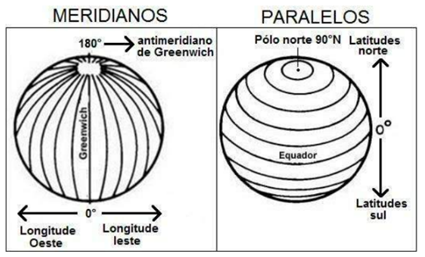
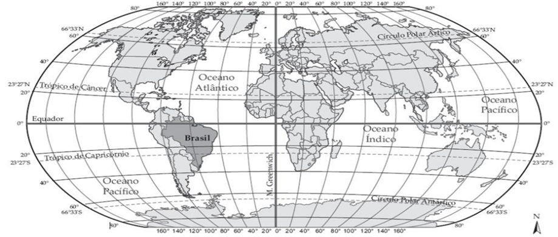
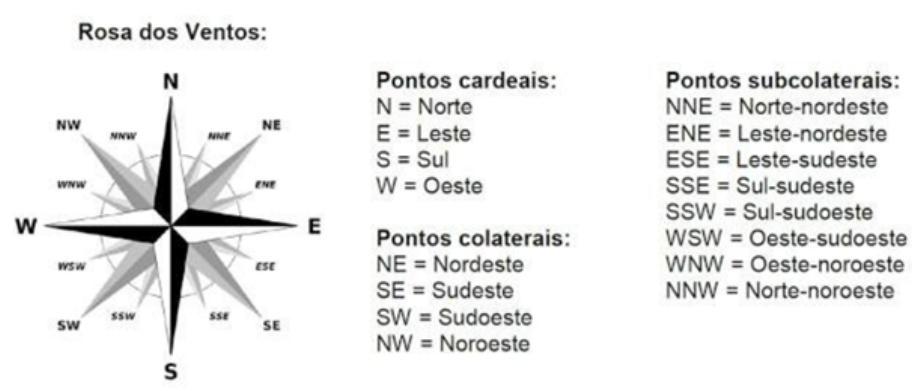
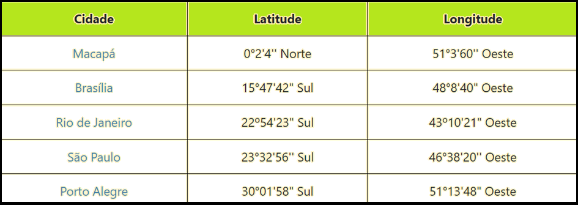
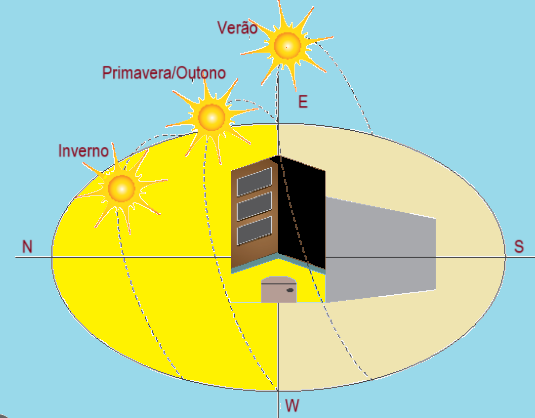

INFORMAÇÕES DO CLIENTE, LOCALIZAÇÃO E DINÂMICA DOS ASTROS.
No levantamento das informações básicas do cliente, nos deparamos com a necessidade de informar Longitude e latitude. Estes conceitos têm a ver com localização. Sem entender as formas de se localizar na superfície terrestre, como também a dinâmica dos movimentos da terra e do sol, jamais seremos capazes de entender como funciona a geração de energia a partir da energia solar.

Os paralelos são linhas imaginarias que estão dispostas ao redor do planeta no sentido horizontal, ou seja, de leste a oeste. Tem como paralelo principal a linha do Equador e é medido em graus. de 0º a 90º, São 90 linhas imaginárias ao Norte e 90 linhas ao Sul. A distância de qualquer ponto da superfície terrestre em relação à linha do Equador recebe o nome de latitude. Linha do Equador: É o paralelo zero (0º). Este paralelo é a referência a partir da qual podemos medir a latitude de qualquer ponto da superfície terrestre. Divide a superfície da terra em dois hemisférios, o hemisfério norte, ou setentrional, que contém o polo norte, e o hemisfério sul, ou meridional, que contém o Polo Sul. Os meridianos são linhas imaginárias semicirculares verticais do Polo Sul ao Polo Norte medidos em graus. Todos os meridianos têm o mesmo comprimento. O principal meridiano é o Greenwich (90°) e é onde começa todos os meridianos. Ele é o único que possui um nome específico, e é utilizado como referência para estabelecer a divisão da Terra em dois hemisférios: Ocidente (oeste) e Oriente (leste). A distância de qualquer ponto da superfície terrestre em relação ao meridiano de Greenwich recebe o nome de longitude, dada em graus. A longitude de Greenwich é 0º. A longitude varia de 0º a 180º para leste ou oeste.

Para nos localizarmos no espaço terrestre usamos a bussola, ou a tecnologia GPS - Sistema de posicionamento Global, que tem as descobertas da Geografia como base.

Através do Google Earth podemos, facilmente encontrar a longitude e a latitude de um local.
Brinque um pouco: encontre a latitude e longitude de sua casa.
Para a instalação de usinas fotovoltaicas devemos virar os módulos foto voltaicos para o sol. Parece bobo, pois o sol ilumina tudo, mas não é bem assim, o sol passa de lada por aqui no RJ, a aproximadamente 22º. Logo, para cada região da terra, antes de instalar um sistema fotovoltaico, devemos saber para qual direção e em qual ângulo os módulos devem ser instalados.
Então que para a melhor eficiência na geração devemos considerar o hemisfério no qual estamos, a orientação do módulo e a inclinação, que deve ser igual a latitude de onde nos encontramos.

A partir da tabela acima vemos que se o RJ está no sul, logo, deveremos virar os módulos para o norte. Já em Macapá deveremos virar os módulos para o sul. A inclinação dos módulos no RJ, deve ser de 22º54'23" (Vinte e dois graus, cinquenta e quatro minutos e vinte e três segundos), mas na prática ajustamos em 22º.

Para aprofundar seus conhecimentos geográgicos acesse Geografia Geral